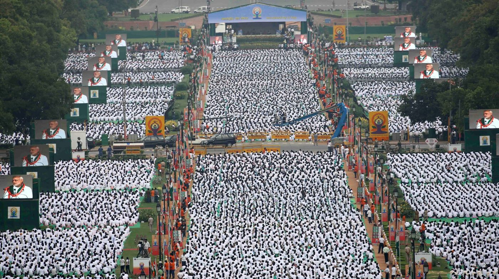
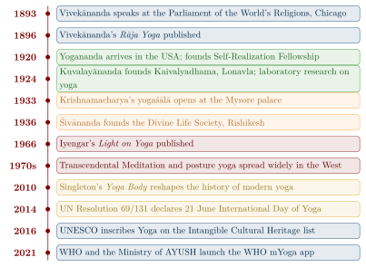

Chapter 11: Yoga in the Modern World: Global Spread and Contemporary Debates¶
Bhagavad Gītā 6.46
tapasvibhyo'dhiko yogī jñānibhyo'pi mato'dhikaḥ
karmibhyaś cādhiko yogī tasmād yogī bhavārjuna
The yogi is superior to the ascetic, superior even to the person of knowledge, and superior to the one who performs ritual action. Therefore, O Arjuna, be a yogi.
11.1 Introduction: Yoga’s Journey Across the World¶
In the last 130 years Yoga has travelled further than at any time in its long history. Practised in some form on every continent, taught in studios, hospitals, schools and prisons, and promoted by the Government of India and the United Nations, it has become one of India’s most visible contributions to world culture.
This success raises questions that this chapter tries to answer honestly. What exactly travelled? Modern “yoga” — for most people a class of postures and breathing — differs greatly from the meditative discipline of Patañjali and from the secret ascetic techniques of medieval Haṭha Yoga. How did the modern form come about? What does scientific research actually show about its health effects? And what has been the cost of the guru model when it has been transplanted into commercial settings? The chapter considers the modern masters, the history of modern postural yoga, the televised mass yoga of contemporary India, the abuse scandals that have shaken several lineages, the state of the research evidence, and the politics, institutions and debates of the present.
11.2 International Day of Yoga¶
11.2.1 The United Nations Resolution¶
On 11 December 2014, the United Nations General Assembly adopted Resolution 69/131, declaring 21 June the International Day of Yoga (IDY). The resolution, proposed by India, was co-sponsored by 177 member states — a record for a General Assembly resolution of its kind at the time — and adopted without a vote.
The initiative was announced by Prime Minister Narendra Modi in his address to the General Assembly on 27 September 2014. The date chosen, 21 June, is the summer solstice, the longest day of the year in the northern hemisphere.
Note: Resolution 69/131 — Key Facts
-
Date of Adoption: 11 December 2014
-
Resolution Number: A/RES/69/131
-
Co-sponsors: 177 member states
-
Day Designated: 21 June, International Day of Yoga
-
First Observance: 21 June 2015
-
Adoption Method: Without a vote
11.2.2 The First International Day of Yoga: 21 June 2015¶
The inaugural International Day of Yoga on 21 June 2015 was marked by events around the world. In New Delhi, a mass session on Rajpath (now Kartavya Path), led by the Prime Minister, set Guinness World Records for the largest yoga session (nearly 36,000 participants) and the most nationalities taking part (Figure 11.1). India Post marked the day with a commemorative stamp. The Ministry of AYUSH (Ayurveda, Yoga and Naturopathy, Unani, Siddha and Homoeopathy) has since coordinated IDY through Indian missions abroad.
The Common Yoga Protocol (CYP), drawn up by a panel of yoga experts convened by the Ministry, provides a sequence of about 45 minutes of āsana, prāṇāyāma and meditation intended for people of all ages, and has been the basis of IDY events in many countries. In December 2016 UNESCO inscribed Yoga on its Representative List of the Intangible Cultural Heritage of Humanity.


11.3 Timeline of Yoga’s Global Spread¶
Figure 11.2 marks the main events, from Vivekānanda’s Chicago address to the WHO mYoga app.

11.4 The Great Modern Masters¶
The global spread of Yoga is inseparable from a succession of teachers who, from the late nineteenth century, reimagined its transmission for a new age; Mark Singleton and Ellen Goldberg’s collection Gurus of Modern Yoga studies many of them (Singleton and Goldberg 2014).
11.4.1 Swāmī Vivekānanda (1863–1902)¶
Born Narendranath Datta in Calcutta, Vivekānanda became the foremost disciple of Rāmakṛṣṇa. His address to the Parliament of the World’s Religions in Chicago on 11 September 1893 made him famous, and his lectures in the United States and Britain introduced Western audiences to Rāja, Karma, Bhakti and Jñāna Yoga.
Key Point: Vivekānanda’s Key Contributions
-
Published Rāja Yoga (1896), a highly influential English presentation of Patañjali’s Yoga (Vivekananda 1896)
-
Founded the Vedanta Society of New York (1894) and the Ramakrishna Mission (1897)
-
Presented Yoga as a universal “science” open to people of any religion
-
Promoted “practical Vedānta” — spirituality joined to social service
Vivekānanda’s Yoga was meditative and philosophical. He was openly dismissive of Haṭha Yoga, which he regarded as mere physical culture of little spiritual value — a reminder that the posture-centred yoga that later became global was not what the first modern ambassador of Yoga taught (De Michelis 2004; Singleton 2010).
11.4.2 Paramahansa Yogananda (1893–1952)¶
Yogananda brought Kriyā Yoga — a technique of breath control and meditation transmitted, according to his lineage, from Mahāvatār Bābājī through Lāhirī Mahāśaya and Swāmī Sri Yukteswar — to the United States, where he settled in 1920 and founded the Self-Realization Fellowship. His Autobiography of a Yogi (1946) became one of the most widely read spiritual books of the twentieth century.
11.4.3 Sri Aurobindo (1872–1950) and Integral Yoga¶
Aurobindo Ghose, educated at Cambridge, was a leader of the radical wing of the nationalist movement in Bengal until his arrest in the Alipore bomb case of 1908. Acquitted in 1909, he withdrew in 1910 to French Pondicherry, where he devoted the rest of his life to yoga. His “Integral Yoga” (pūrṇa yoga) is set out above all in The Synthesis of Yoga, serialised in his journal Arya between 1914 and 1921 (Aurobindo 1999). Its premise is that each classical yoga develops one part of the human being — Haṭha the body and the life-force, Rāja the mind, the Gītā’s yogas of works, knowledge and devotion the will, the intellect and the heart — and that a synthesis must take them all up. Its goal is not escape from the world, which Aurobindo thought the ascetic traditions had sought, but the transformation of human nature by the descent of a higher, “supramental” consciousness, so that liberation would be embodied and in the end collective. Its method is less a set of techniques than an attitude: aspiration, the rejection of lower impulses and surrender to the divine Śakti, whom his followers saw embodied in his collaborator Mirra Alfassa, “the Mother” (1878–1973), who led the Sri Aurobindo Ashram and founded Auroville in 1968. Peter Heehs’s biography places the teaching in the context of Aurobindo’s reading of the Gītā, the Upaniṣads and the Tantras, and of Western evolutionary thought (Heehs 2008). Aurobindo is the clearest case of a modern teacher who used the many yogas of the tradition to build a new system rather than to restore an old one.
11.4.4 T. Krishnamacharya (1888–1989)¶
Tirumalai Krishnamacharya is widely regarded as the most influential figure in the making of modern postural yoga. Born in Karnataka, he was a Sanskrit scholar trained in several śāstras; by his own account he studied yoga for seven years with a teacher, Rāmmohan Brahmacārī, in the Himalayas, though this cannot be independently verified.
From 1933 he ran a yogaśālā in the Jaganmohan Palace in Mysore under the patronage of Maharaja Krishnaraja Wadiyar IV. There he developed a vigorous style that linked āsanas with breath in flowing sequences (vinyāsa) and taught it to boys from the palace school. Two of the most influential global styles — Iyengar Yoga and Ashtanga Vinyasa Yoga — descend from this teaching. In later life, in Madras, he emphasised adapting practice to the individual, a principle his son T.K.V. Desikachar developed as “Viniyoga” (Desikachar 1995).
Historians have shown that Krishnamacharya’s Mysore style drew not only on Haṭha texts but also on the physical culture of his time — Indian wrestlers’ exercises (vyāyāma), gymnastics and Western physical-culture systems then popular in India (Sjoman 1996; Singleton 2010). This is discussed further below.
11.4.5 B.K.S. Iyengar (1918–2014)¶
B.K.S. Iyengar, Krishnamacharya’s brother-in-law and student, developed Iyengar Yoga, characterised by meticulous attention to alignment, the use of props (blocks, belts, blankets, bolsters, ropes) and a graded approach. His Light on Yoga (1966), which describes about 200 āsanas and 14 prāṇāyāmas with photographs, became a standard reference worldwide; it was followed by Light on Prāṇāyāma (1981) and The Tree of Yoga (1988) (Iyengar 1966, 1981, 1988). Among his students were the violinist Yehudi Menuhin, J. Krishnamurti and Queen Elisabeth of Belgium. He received the Padma Vibhushan in 2014, the year of his death.
11.4.6 K. Pattabhi Jois (1915–2009)¶
K. Pattabhi Jois, another student of Krishnamacharya, codified Ashtanga Vinyasa Yoga, which he taught for six decades at his institute in Mysore. It consists of fixed series of āsanas performed in a set order, linked by breath (ujjāyī), bandha and gaze-points (dṛṣṭi). The Primary Series is called Yoga Cikitsā (“yoga therapy”) and the Intermediate Nāḍī Śodhana. Jois’s “Mysore style” self-practice attracted generations of Western students from the 1970s and gave rise to “Power Yoga” and many vinyasa-based styles. His legacy is now shadowed by accounts of sexual abuse, discussed in Section 11.10.
11.4.7 Swāmī Śivānanda (1887–1963) and His Disciples¶
Swāmī Śivānanda Sarasvatī, born Kuppuswami, worked as a physician in Malaya before renouncing the world and settling in Rishikesh, where he founded the Divine Life Society in 1936. His eclectic “Yoga of Synthesis” combined Karma, Bhakti, Jñāna and Rāja Yoga, and he wrote some two hundred books. His disciples included Swāmī Satchidananda (Integral Yoga), Swāmī Vishnudevananda (Sivananda Yoga Vedanta Centres), Swāmī Chidananda, and Swāmī Satyānanda Sarasvatī, who founded the Bihar School of Yoga at Munger in the early 1960s; the school’s manuals on āsana, prāṇāyāma, mudrā and bandha are widely used (Satyananda Saraswati 1969; Sivananda 1935).
11.4.8 Maharishi Mahesh Yogi (1918–2008)¶
Maharishi Mahesh Yogi, a disciple of Swāmī Brahmānanda Sarasvatī, Śaṅkarācārya of Jyotirmaṭh, taught Transcendental Meditation (TM), a mantra-based technique presented as effortless and requiring no particular belief. TM attracted extensive scientific study from the 1970s; Herbert Benson’s research on meditation led to his concept of the “relaxation response” (Benson 1975). Much of the TM literature, however, was produced by researchers affiliated with the movement, and independent reviews have found its specific benefits over other relaxation methods to be uncertain (Table 11.1).
| Teacher | Dates | Principal Contribution |
|---|---|---|
| Swāmī Vivekānanda | 1863–1902 | Chicago 1893; Rāja Yoga; Ramakrishna Mission |
| Paramahansa Yogananda | 1893–1952 | Kriyā Yoga; Autobiography of a Yogi; Self-Realization Fellowship |
| Swāmī Kuvalayānanda | 1883–1966 | Kaivalyadhama (1924); early laboratory research on yoga |
| T. Krishnamacharya | 1888–1989 | Mysore yogaśālā; vinyāsa; individualised teaching |
| Swāmī Śivānanda | 1887–1963 | Divine Life Society; Yoga of Synthesis |
| B.K.S. Iyengar | 1918–2014 | Iyengar Yoga; props; Light on Yoga |
| K. Pattabhi Jois | 1915–2009 | Ashtanga Vinyasa Yoga; Mysore style |
| Maharishi Mahesh Yogi | 1918–2008 | Transcendental Meditation |
11.5 Women in the History of Yoga¶
Every teacher in Table 11.1 is a man, and almost every pre-modern yoga text was composed by men for male renunciants. Yet women have been present throughout the history of yoga, and in the modern period they have shaped it decisively.
Pre-modern sources. The Yogayājñavalkya, an influential Brahmanical yoga text (c. 13th–14th century), is framed as Yājñavalkya’s teaching of an eight-limbed yoga to the woman philosopher Gārgī, and it presents yoga as a discipline for householders as well as ascetics. Haṭha texts assume that women can practise: the Haṭha Yoga Pradīpikā describes a female form of vajrolī and calls the woman who masters it a yoginī (3.99, 3.102), and other texts teach their techniques to “women and men” alike (Mallinson and Singleton 2017). In Tantric traditions female deities and human yoginīs were central to ritual, and some Kaula lineages recognised women as initiates and teachers (White 2003). In Bengali Nātha legend Queen Mayanāmatī, a disciple of Gorakṣa, initiates her son Gopīcandra into the yogic life. The 14th-century Kashmiri Śaiva yoginī Lallā (Lal Ded) left Kashmiri verses (vākh) describing breath control, the central channel and the inner sound from her own practice (Hoskote 2011); and the women saints of Bhakti — Āṇṭāḷ, Akka Mahādevi, Mīrābāī — spoke of devotion as a yoga (Chapter 3).
The modern period. Indra Devi (Eugenie Peterson, 1899–2002), a Latvian-born actress, persuaded Krishnamacharya to teach her in Mysore in the late 1930s, becoming the first Western woman he trained; she taught in Shanghai, opened a studio in Hollywood in 1947, and later spread yoga across Latin America (Goldberg 2015). Through her and many others, posture yoga in the West became a practice taught and attended largely by women, and was adapted to women’s lives in ways the classical texts never considered. In India, Geeta S. Iyengar (1944–2018) developed sequences for menstruation, pregnancy and menopause in Yoga: A Gem for Women (1983), and women lead many of the institutions described in this chapter. The abuse cases discussed in Section 11.10 show the other side of this history: the students harmed by charismatic male teachers were very often women.
11.6 Major Modern Yoga Styles¶
Table 11.2 compares the main modern styles.
| Style | Founder | Origin | Key Characteristics |
|---|---|---|---|
| Iyengar Yoga | B.K.S. Iyengar | Pune, 1960s | Precise alignment; props; long holds |
| Ashtanga Vinyasa | K. Pattabhi Jois | Mysore, 1948 | Fixed sequences; breath–movement linkage; bandha; dṛṣṭi |
| Sivananda Yoga | Vishnudevananda | Montreal, 1959 | 12 basic āsanas; “five points”; devotional and Vedāntic setting |
| Bihar (Satyananda) Yoga | Satyānanda Sarasvatī | Munger, 1960s | Haṭha, Tantra-derived practices; Yoga Nidrā |
| Viniyoga | T.K.V. Desikachar | Chennai, 1970s–80s | Individualised; breath-centred; therapeutic |
| Kundalini Yoga (3HO) | Yogi Bhajan | USA, 1969 | Kriyās; mantra; vigorous breathing |
| Bikram Yoga | Bikram Choudhury | USA, 1970s | 26 postures in a room heated to about 40\(^\circ\)C |
| Vinyasa / Flow | Many teachers | USA, 1980s–90s | Creative sequencing of movement and breath |
| Restorative Yoga | Judith Hanson Lasater | USA, 1970s–90s | Passive, supported postures; props |
| Yin Yoga | Paulie Zink; Paul Grilley | USA, 1980s–90s | Long passive holds; Daoist influence |
| Trauma-Sensitive Yoga | David Emerson | Boston, early 2000s | Invitational cues; choice; interoception |
| Power Yoga | Bryan Kest; Beryl Bender Birch | USA, 1990s | Athletic; adapted from Ashtanga |
11.7 How Modern Postural Yoga Was Made¶
Why did a tradition whose classical texts describe at most a few dozen postures, nearly all seated, become a global practice centred on sequences of standing and flowing āsanas? Since the early 2000s historians of modern yoga have offered a well-documented answer.
The scholarly case. Elizabeth De Michelis traced how Vivekānanda and his successors created “Modern Yoga” out of Vedānta, Western esotericism and the psychology of the time, and coined the term “Modern Postural Yoga” for the posture-centred forms that followed (De Michelis 2004). Norman Sjoman showed that the Mysore palace tradition from which Krishnamacharya’s students emerged drew on a 19th-century illustrated compendium, the Śrītattvanidhi, and on gymnastic exercise manuals used in the palace (Sjoman 1996). Mark Singleton’s Yoga Body (2010) argued that modern posture practice is best understood as a hybrid. In the late 19th and early 20th centuries Haṭha Yoga’s yogis were widely despised, both by colonial observers and by Indian reformers (Section 11.4); at the same time a transnational physical-culture movement — Swedish gymnastics, bodybuilding, Danish “primitive gymnastics” and the exercise regimes of the YMCA and the Indian army — was transforming Indian attitudes to the body. Indian nationalists promoted physical training as a way to build national strength, and teachers such as Kuvalayānanda and Krishnamacharya fused this physical culture with Haṭha names and techniques to create a respectable, “scientific”, Indian system of exercise (Singleton 2010).
What the thesis does and does not claim. Singleton does not claim that modern yoga is “fake” or that it has no Indian roots. His point is that modern posture practice is a modern Indian creation, drawing on Haṭha Yoga, on Indian wrestling and exercise traditions, and on international physical culture, and that its descent from the classical texts is less direct than practitioners often assume. Subsequent research has qualified the picture: Jason Birch and others have shown that some late-medieval Haṭha texts describe many more āsanas, including some dynamic and non-seated ones, than had been realised, so that the proliferation of postures began before the colonial period (Birch 2018). The debate has therefore moved from “ancient or modern?” to the more precise question of which elements are old, which are new, and how they were combined (Mallinson and Singleton 2017).
Why it matters. Some Indian commentators have reacted to this research as an attack on India’s heritage. That reading misunderstands it. Recognising that twentieth-century Indian teachers creatively reshaped Yoga credits them with real innovation; insisting that modern posture practice is unchanged from the Vedic age both misrepresents history and obscures the distinctive character of the meditative, renunciant and Tantric yogas described in earlier chapters of this volume.
11.8 Laboratories and Exercise Halls: Haṭha Yoga Reinterpreted¶
Between the pre-modern texts of Chapter 7 and the global styles of this chapter lies a short but decisive period, roughly 1918–1940, in which Indian teachers deliberately recast Haṭha Yoga as hygiene, therapy and physical education. Two institutions founded by pupils of the same teacher, the ascetic Paramahaṃsa Mādhavadāsjī, set the pattern.
The Yoga Institute (1918). Shri Yogendra (1897–1989) opened a centre for teaching yoga to householders in 1918 at Versova, near Bombay, in a house belonging to the nationalist Dadabhai Naoroji. His programme was addressed to householders rather than renouncers: it left aside the ascetic setting and the more extreme techniques of the Haṭha texts and offered a graded course of simple postures, breathing and personal hygiene that could be practised at home (Singleton 2010).
Kaivalyadhama (1924). Swāmī Kuvalayānanda (J. G. Gune, 1883–1966), a schoolteacher and nationalist, founded Kaivalyadhama at Lonavla in 1924 and in the same year began the journal Yoga-Mīmāṃsā. Its early issues reported X-ray studies of uḍḍīyāna and nauli and measurements of the pressure inside the abdomen during these techniques. Kuvalayānanda’s aim was to show that Haṭha practices had definite physiological effects that could be described in the language of medicine, and to use them in therapy and in physical education in schools. Kaivalyadhama also began a long programme of editing Haṭha texts, including the edition of the Haṭhapradīpikā cited in this volume (Svātmārāma 1970). The anthropologist Joseph Alter has argued that this project transformed yoga from within: by treating the body of the texts as an object for laboratory investigation, it detached the techniques from the metaphysics of bindu, nāḍīs and liberation that had given them their meaning, while claiming that science confirmed the tradition (Alter 2004). The modern research described later in this chapter (Section 11.11) is its descendant, and the cautions given there apply equally to these early studies.
Physical culture and the sun salutation. In the same years a separate tradition of Indian exercise was being promoted as national regeneration. The best-known example is sūryanamaskār, a sequence of prostrations to the sun practised in Maharashtra, which Bhawanrao Pant Pratinidhi, the Rāja of Aundh, popularised in the 1920s and 1930s through schools and a widely read book, The Ten-Point Way to Health (1938). At the time it was regarded as exercise, not yoga. As noted in Chapter 7 (Section 7.12.4), no pre-modern yoga text teaches the sun salutation sequences that now open many classes; their absorption into yoga practice, together with gymnastic and bodybuilding exercises, was the work of teachers such as Krishnamacharya in the 1930s (Singleton 2010).
The result of this period was a yoga that was respectable, teachable in classes, compatible with medicine and patriotic. That transformation made the later global spread possible; it also explains why so much of what is now called yoga has little to do with the goals — samādhi, the preservation of bindu, liberation — that the texts in this volume set out.
11.9 Yoga on Television: Ramdev and Mass Yoga¶
In India itself the largest yoga phenomenon of the early twenty-first century was neither the studio nor the laboratory but television. Baba Ramdev, an ascetic from Haryana who had taught yoga camps since the 1990s, became a national figure from the early 2000s through early-morning programmes on devotional television channels, which brought daily practice into millions of households. With his associate Acharya Balkrishna he founded the Patanjali Yogpeeth at Haridwar in 2006, and the associated company Patanjali Ayurved grew within a decade into one of India’s largest sellers of consumer goods. His camps, attended by thousands at a time, teach a short routine centred not on postures but on breathing — kapālabhāti, bhastrikā and alternate-nostril breathing — presented as a cure or preventive for a wide range of chronic illnesses.
Those medical claims are not supported by the research reviewed later in this chapter (Section 11.11), and they have repeatedly brought him into conflict with medical bodies and regulators: in 2020 the Ministry of AYUSH told Patanjali not to advertise a herbal preparation as a cure for COVID-19, and in 2024 the Supreme Court of India, hearing a petition by the Indian Medical Association, censured the company’s misleading advertisements, after which Ramdev and Balkrishna apologised publicly. Chandrima Chakraborty has described the figure Ramdev created as “the Hindu ascetic as fitness instructor”: he combined the authority of the renouncer with the language of modern health, consumer marketing and nationalism (Chakraborty 2007). His campaigns for svadeśī goods, against corruption (his protest at the Rāmlīlā Maidān in Delhi in June 2011 was broken up by the police) and for indigenous medicine made his yoga openly political. Televised mass yoga thus differs from the global studio yoga in three ways: it is breath-led rather than posture-led, it is sold together with Āyurvedic products, and it is framed as national self-reliance in health.
11.10 Gurus, Power and Abuse¶
Yoga has always been transmitted through the guru, whose authority over the disciple is traditionally near-absolute (Chapter 1). In modern, often commercial, settings that authority has repeatedly been abused, and an honest account of modern yoga must record this.
-
K. Pattabhi Jois. Numerous former students, women and some men, have described being sexually assaulted by Jois in the guise of hands-on “adjustments” during classes, from the 1970s to the 2000s. Photographs and video corroborate some accounts. These testimonies, gathered by journalists and in Matthew Remski’s study of abuse and cult dynamics in Ashtanga Yoga, have forced the Ashtanga community to reassess the culture of unquestioning devotion that allowed the abuse to continue (Remski 2019).
-
Bikram Choudhury. From 2013 several women filed civil lawsuits accusing the founder of Bikram Yoga of sexual harassment, assault and rape. In 2016 a Los Angeles jury awarded his former legal adviser, Minakshi Jafa-Bodden, more than $7 million in damages for sexual harassment and wrongful dismissal; Choudhury left the United States, and a warrant was later issued for his arrest for failing to pay. In 2015 a US federal appeals court had also rejected his attempt to copyright his posture sequence, ruling that a sequence of yoga postures is not copyrightable.
-
Satyananda Yoga in Australia. In 2014 Australia’s Royal Commission into Institutional Responses to Child Sexual Abuse held public hearings (Case Study 21) into the sexual abuse of children at the Satyananda Yoga ashram at Mangrove Mountain, New South Wales, in the 1970s and 1980s; its report found that the ashram’s leader had abused children and that survivors had also made allegations against Swāmī Satyānanda himself.
-
Yogi Bhajan (3HO). In 2020 an independent investigation commissioned by the organisations he founded found allegations of sexual abuse and coercion by Yogi Bhajan to be more likely than not true.
These cases have common features: absolute deference to a charismatic teacher, physical “adjustments” given without consent, closed communities in which complaints were discouraged, and institutions that protected their founders’ reputations. They have led many schools to adopt codes of conduct, consent practices for touch, and independent complaint procedures. The tradition’s own texts insist that a teacher be tested for character before being accepted; the modern experience suggests that institutional safeguards are needed as well.
11.11 Scientific Research on Yoga: What the Evidence Shows¶
Yoga has been the subject of a large and fast-growing research literature, beginning with Kuvalayānanda’s laboratory at Kaivalyadhama in the 1920s and expanding greatly since the 1990s, with major contributions from Indian institutions such as NIMHANS, AIIMS and S-VYASA. The quality of this literature is uneven. Many trials are small, short and unblinded; “yoga” interventions vary widely; comparison groups are often waiting lists rather than active treatments; and a substantial share of trials come from institutions committed to promoting yoga, raising concerns about bias. Systematic reviews therefore matter more than individual studies, and this section relies on them.
Health and Safety Note
Yoga is not a substitute for medical diagnosis or treatment. People with heart disease, uncontrolled high blood pressure, glaucoma, osteoporosis, recent surgery or injury, or who are pregnant, should seek medical advice and modify their practice: inversions, deep backbends, forceful breathing and breath retention carry particular risks. In randomised trials yoga is about as safe as usual care and other exercise, but serious injuries have been reported, often in advanced postures or with forceful adjustment (Cramer et al. 2015).
11.11.1 Findings by Condition¶
-
Chronic low back pain. This is the best-studied application. A Cochrane review found low- to moderate-certainty evidence that yoga produces small to moderate improvements in back-related function and pain compared with non-exercise controls, with effects similar to other forms of exercise (Wieland et al. 2017). The American College of Physicians’ 2017 guideline lists yoga among the non-drug treatments that may be used first for chronic low back pain (Qaseem et al. 2017).
-
Blood pressure. A meta-analysis of 49 randomised trials found that yoga lowered systolic and diastolic blood pressure by roughly 5 and 4 mmHg respectively; effects were larger when practice included breathing and meditation rather than postures alone (Wu et al. 2019). Yoga may be a useful adjunct to, not a replacement for, conventional management.
-
Other cardiovascular and metabolic risk factors. Reviews report modest improvements in lipids, body weight and glycaemic control in some trials, but the evidence is of low quality (Cramer et al. 2014). The Lifestyle Heart Trial of Dean Ornish and colleagues reported regression of coronary atherosclerosis, but its programme combined a very low-fat diet, exercise, stress management (including yoga and meditation) and smoking cessation, so the effect cannot be attributed to yoga alone (Ornish et al. 1990).
-
Depression. Meta-analyses find that yoga reduces depressive symptoms compared with usual care or waiting-list controls, including in people with diagnosed mental disorders, but evidence comparing it with established treatments is limited and many trials have a high risk of bias (Cramer et al. 2013; Brinsley et al. 2021). It is best regarded as a possible adjunct to standard care.
-
Anxiety. A meta-analysis found small to moderate short-term reductions in anxiety compared with no treatment, with weaker evidence for people with diagnosed anxiety disorders (Cramer et al. 2018).
-
Stress physiology. Reviews report that yoga is associated with lower cortisol, blood pressure and resting heart rate, and with increased heart rate variability — a marker of healthy autonomic regulation. The magnitude of these effects varies widely between studies (Pascoe et al. 2017; Zaccaro et al. 2018).
-
Cancer. For women with breast cancer, a Cochrane review found moderate-quality evidence that yoga improves health-related quality of life and reduces fatigue and sleep disturbance compared with no intervention (Cramer et al. 2017). There is no good evidence that yoga affects the course of the cancer itself.
-
Post-traumatic stress disorder. One randomised trial in women with chronic, treatment-resistant PTSD found greater symptom reduction with a trauma-sensitive yoga class than with a health-education control (van der Kolk et al. 2014). This is promising but rests on few trials.
-
Brain studies. Small imaging studies have reported differences in cortical thickness in long-term (Buddhist insight) meditators and a rise in brain GABA after a yoga session (Lazar et al. 2005; Streeter et al. 2007). These were pilot or cross-sectional studies, and they concern meditation as much as posture practice; they should not be read as establishing that yoga “changes the brain” in any particular way.
11.11.2 Grading the Evidence¶
Table 11.3 summarises the evidence for the clinical uses discussed above.
| Condition | Summary | Certainty |
|---|---|---|
| Chronic low back pain | Small–moderate benefit vs non-exercise controls; similar to other exercise | Low to moderate |
| Hypertension | SBP/DBP reduced by about 5/4 mmHg; adjunct only | Moderate |
| Breast cancer (quality of life, fatigue) | Improvement vs no intervention | Moderate |
| Depression | Symptom reduction vs usual care; few comparisons with standard treatments | Low to moderate |
| Anxiety | Small–moderate short-term reduction | Low |
| PTSD | Promising results in a few trials | Low |
| Type 2 diabetes, lipids | Modest improvements in some trials | Low |
“Certainty” follows the judgements of the cited reviews where available (GRADE-style: high, moderate, low, very low). Claims that yoga boosts immunity, cures disease or reverses ageing are not supported by reliable evidence.
11.12 Yoga Therapy¶
The field of yoga therapy applies yoga practices to people with particular health conditions. The International Association of Yoga Therapists (IAYT), founded in 1989, accredits training programmes and certifies yoga therapists. Recent programmes include Trauma-Sensitive Yoga, developed by David Emerson at the Trauma Center in Boston with the psychiatrist Bessel van der Kolk, which uses invitational language, emphasises choice and internal sensation, and avoids hands-on adjustment; and Y-12SR, developed by Nikki Myers, which combines yoga with the twelve-step model of addiction recovery but has not yet been rigorously evaluated. Integrative oncology programmes in India and abroad offer yoga to support patients’ quality of life alongside conventional treatment.
11.13 Institutions and Policy¶
11.13.1 Institutions in India¶
-
The Ministry of AYUSH, a separate ministry since November 2014, coordinates the International Day of Yoga, publishes the Common Yoga Protocol, and funds research in yoga and the traditional medical systems.
-
The Morarji Desai National Institute of Yoga (New Delhi) provides training, therapy and research under the Ministry.
-
The Yoga Certification Board (2018), under the Ministry, certifies yoga professionals at several levels.
-
Long-established institutions such as Kaivalyadhama (Lonavla, 1924), the Bihar School of Yoga and S-VYASA (Bengaluru, founded by H.R. Nagendra in 1986) combine teaching with research.
11.13.2 The World Health Organization¶
The WHO has engaged with yoga mainly as part of its work on traditional and complementary medicine. In 2021 it launched, with India’s Ministry of AYUSH, the WHO mYoga app offering short guided practice sessions, and its Global Traditional Medicine Strategy 2025–2034 encourages member states to build the evidence base for, and safely regulate, traditional and complementary practices.
11.14 Yoga, Nation and Politics¶
Yoga has been bound up with Indian nationalism since the early twentieth century, when Kuvalayānanda, the Rāja of Aundh and others presented it as a means of building a strong nation (Section 11.8). Since 2014 it has also been an instrument of state policy. A separate Ministry of AYUSH was created in November 2014; the International Day of Yoga, led each year by the Prime Minister, is organised through Indian missions abroad; UNESCO’s inscription of yoga as Intangible Cultural Heritage in 2016 was an Indian nomination; and yoga is promoted as part of India’s “soft power”. Successive governments have also sought to protect yoga as Indian traditional knowledge, among other things by documenting postures in the Traditional Knowledge Digital Library to forestall foreign claims of patent or copyright.
This promotion has made yoga part of debates about national identity, religion and the ownership of tradition. Hindu nationalist organisations have long included sūryanamaskār and other exercises in their daily drills, and the official promotion of yoga after 2014 was welcomed by them as the recognition of a Hindu heritage. Some Muslim organisations objected to the inclusion of the sun salutation and the chanting of Oṃ in school and official programmes, and the government in turn insisted that yoga had no religious content and that such elements were optional. Outside India the question has been posed the other way round: the Hindu American Foundation’s “Take Back Yoga” campaign, begun in 2010, argued that the yoga industry had erased yoga’s Hindu origins, while Christian and Muslim critics in several countries objected to it as Hindu worship (Section 11.17). Andrea Jain has analysed these claims, and the “wellness” market that sells yoga as a lifestyle brand, as rival attempts to define what yoga is and to whom it belongs (Jain 2015, 2020). The history told in this volume suggests that no single claim can succeed. Yoga’s techniques and ideas were shaped by Brahmanical, Śaiva, Vaiṣṇava, Buddhist, Jain, Sufi and Sikh practitioners, by colonial-era reformers and by modern international physical culture; it is at once a living religious tradition, a national symbol and a global commodity.
11.15 Commercialisation and Tradition¶
The commercial yoga industry — studio classes, clothing, equipment, retreats, teacher trainings and digital platforms — is now very large. Critics argue that it has reduced yoga to āsana-centred exercise, detached from its ethical and meditative aims, and sometimes marketed through images of affluence and youthful bodies. Defenders reply that posture practice has given millions of people a healthier relationship with their bodies, and that many students who begin with āsana go on to explore meditation and philosophy (Jain 2015).
Note: The Place of Āsana
In Patañjali’s scheme āsana is only the third of eight limbs, preceded by the ethical disciplines of yama and niyama, and it means a stable seat for meditation. Even in the Haṭha Yoga Pradīpikā, physical techniques are means to Rāja Yoga, and Svātmārāma says that those who practise only Haṭha without knowing Rāja Yoga labour without fruit (4.79). The posture-centred practice that De Michelis called “Modern Postural Yoga” is a legitimate modern development, but it should not be confused with the whole of the tradition.
Traditional teachers and institutions have responded in several ways: by teaching the full eight limbs, including the ethical disciplines, meditation and svādhyāya; by emphasising lineage-based teaching; by including philosophy and Sanskrit in teacher training; and through certification schemes (the Indian Yoga Certification Board, IAYT, and Yoga Alliance internationally) intended to set minimum standards.
The Gītā’s words have often been cited as a warrant for this diversity:
Bhagavad Gītā 4.11
ye yathā māṃ prapadyante tāṃs tathaiva bhajāmy aham
mama vartmānuvartante manuṣyāḥ pārtha sarvaśaḥ
In whatever way people approach Me, in that very way I respond to them. Human beings follow My path in all ways, O Pārtha.
11.16 Yoga in Digital and Contemporary Culture¶
Online classes, video platforms and apps have made yoga instruction available far beyond the reach of studios and teachers. The COVID-19 pandemic (2020–2022), during which studios closed worldwide, accelerated this shift and renewed interest in home practice. Short-form video platforms have introduced yoga to younger audiences, though they favour visually striking postures. The gains are real — access where qualified teachers are scarce — but so are the costs: practice without personal guidance carries a risk of injury, and visual media amplify the posture-centred view of yoga that this volume has tried to correct.
11.17 Yoga and Religious Identity¶
Yoga is rooted in the Brahmanical, Buddhist, Jain and Tantric traditions of India, yet its practices — breath awareness, posture and meditation — have been taken up by people of every religion and none. Its reception has not been uniform. Many Christian, Jewish and Muslim practitioners find its techniques compatible with their faith; some religious authorities have objected to it — Malaysia’s National Fatwa Council, for example, ruled in 2008 that yoga involving Hindu chanting and worship was forbidden to Muslims — and in the United States a California appeals court held in 2015 that a public-school yoga programme, stripped of religious content, did not amount to teaching religion. At the other end of the spectrum, some Hindu groups have argued that the secularised marketing of yoga obscures its Hindu origins.
Vivekānanda’s opening words at Chicago in 1893 — that he was “proud to belong to a religion which has taught the world both tolerance and universal acceptance” — expressed the spirit in which many modern teachers have offered yoga to the world.
11.18 Looking Ahead¶
As evidence accumulates, yoga is likely to be used more often as an adjunct in rehabilitation, chronic pain and mental health care; that will require honest assessment of what it can and cannot do, and better trials — larger, longer, with active comparison groups and independent investigators — to establish which practices help whom. Yoga is part of school curricula in India under the National Education Policy 2020 and is taught in schools in many other countries. After the abuse scandals of recent decades, codes of conduct, consent for physical touch and independent complaint procedures are becoming standard. And the study of yoga’s history is changing fast: critical editions and translations of previously unpublished Haṭha and Tantric texts, many produced by the Haṭha Yoga Project, are transforming what is known (Mallinson and Singleton 2017), and the field of yoga and meditation studies now has its own handbook (Newcombe and O’Brien-Kop 2021). Growing numbers of practitioners are reading the classical texts and their commentaries, and discovering how varied Yoga has always been.
Whatever form these developments take, the classical test of practice remains Patañjali’s: it becomes firmly grounded only when pursued for a long time, without interruption and with care (YS 1.14; see Chapter 2).
11.19 Conclusion¶
The story of Yoga in the modern world is the story of a very old and varied tradition encountering new conditions and being reshaped by them. Modern teachers drew on Haṭha Yoga, on Patañjali and Vedānta, and on the physical culture and science of their own time, and created something new; the result has spread around the world like the taraṅgiṇī — the flowing river — of this volume’s title.
The earlier chapters of this volume have shown how much more there is to Yoga than posture: the meditative discipline of Patañjali, the Gītā’s yogas of action, devotion and knowledge, the subtle-body practices of Tantra, and the forceful techniques of Haṭha Yoga. At its heart, in all its forms, is a practitioner and a practice aimed at stilling the fluctuations of the mind — and, in the tradition’s own terms, at freedom.
Kaṭha Upaniṣad 1.3.14 (= 3.14)
uttiṣṭhata jāgrata prāpya varān nibodhata
kṣurasya dhārā niśitā duratyayā
durgaṃ pathas tat kavayo vadanti
Arise! Awake! Having found the great teachers, understand. Sharp as the edge of a razor and hard to cross — difficult is that path, so the wise declare.